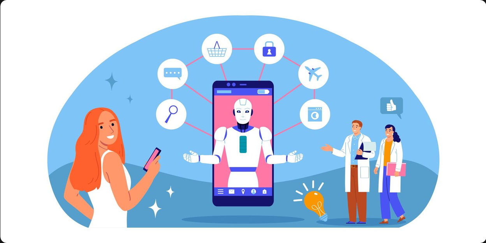

A comprehensive overview of AI and its impact on computing

Artificial Intelligence isn't just a sci-fi idea anymore. It's showing up in pretty much every industry and changing how we work, communicate, and get things done.
AI helps doctors spot diseases in medical scans, predict how patients might do, and even speed up finding new drugs. Some systems can catch cancer in X-rays and MRIs about as accurately as an experienced radiologist, which is pretty wild.
Self-driving cars rely on AI to read sensor data and figure out how to navigate the road. Companies like Tesla and Waymo are pushing this hard, and the hope is fewer accidents. AI also helps manage traffic to cut down on congestion in big cities.
AI tutors can adjust to how each student learns and give personalized feedback. Sites like Khan Academy use it to suggest practice problems based on how you're doing. It can also help teachers grade work and catch students who might be falling behind.
Ever notice how Netflix and Spotify always seem to know what you want next? That's AI recommendation algorithms working off your history. AI is also being used now to generate music, art, and even video game content.
AI can watch network traffic in real time and flag weird patterns that might mean an attack is happening. The big advantage is it reacts way faster than a human analyst ever could.
Large Language Models (LLMs) like ChatGPT and Claude can actually understand and write human language. That's what makes stuff like chatbots, translation tools, and AI coding assistants possible.